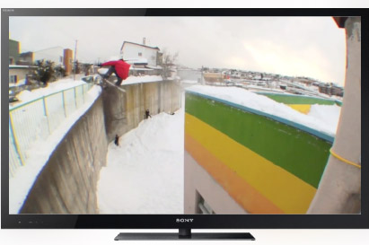
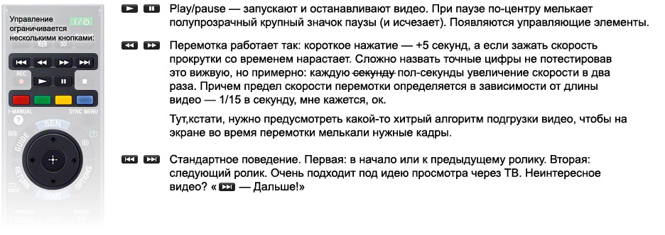
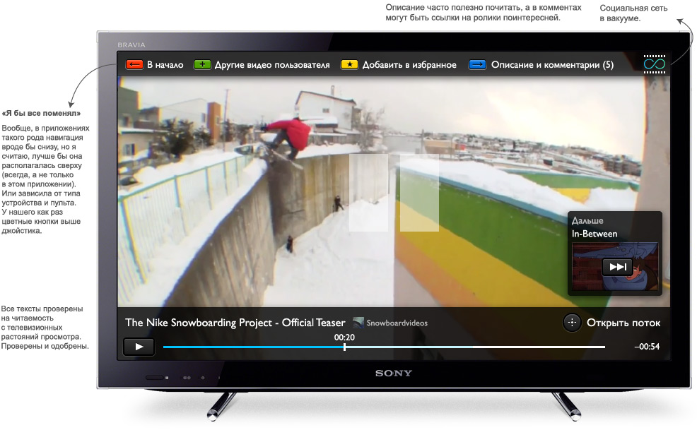
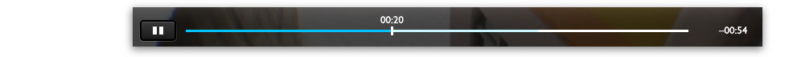
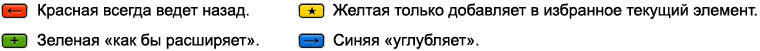
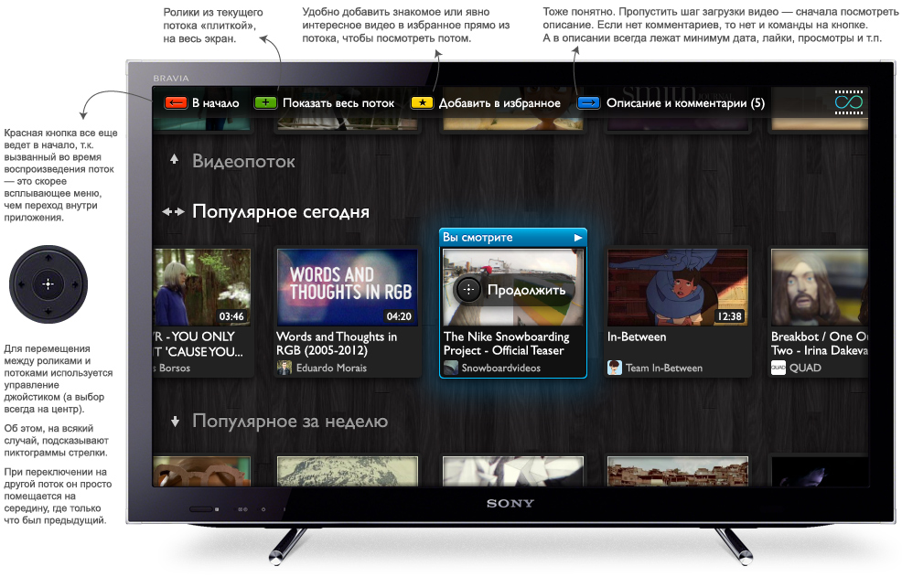
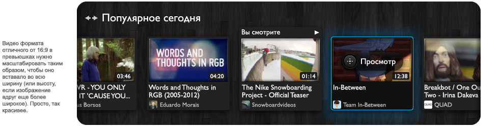
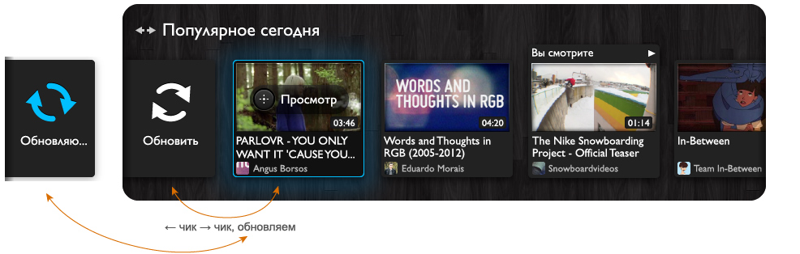

Одно из входных ограничений — пульт изображенный ниже. Управление по условиям задачи осуществляется исключительно таким пультом.
В идеале пользователь должен запустить приложение, быстро увидеть что-то новое и интересное, включить и дальше уже смотреть подряд, как телевизор.
Окей, начнем с конца: плеер (то, что нужно в задании).
После выбора видео, клика на нем, сразу открываем его в полном экране. Качество видео в сети чаще всего сейчас хорошее, поэтому не будем нагружать человека лишним управлением размером подачи.
Соответственно, из возможных вариантов видео всегда выбирается самый качественный. А если сетевой канал пользователя не справляется, можно временно уменьшать качество. Тут еще есть подвох: пользователь не всегда может нажать на паузу и подождать полной загрузки видео — для этого у него должен быть установлен доп. носитель к телевизору.
Само видео можно приостановить и промотать. Для этого используются привычные кнопки:
Пауза:
При перемотке появляется только полоса прокрутки.
Еще немного про навигацию. Сверху у нас навигационная панель. Функции кнопок зависят от контекста. Но у них есть общая логика:
На примерах будет понятно, что все это значит.
На экране паузы есть кнопка «Открыть поток». Вызывается это действие нажатием на центр джойстика. Причем вызвать его можно и не нажимая на паузу, а прямо из играющего видео.
При «открытии потока» мы как бы отдаляем экран от текущего видео и видим, собственно, поток в котором находимся. Это нужно анимировать прямо. В итоге попадаем сюда: (эдакий Zoomworld)
Сначала выбран ролик, который сейчас вопроизводится и можно сразу повторно нажать центральную кнопку и вернуться к нему. Пользователь перемещается по потоку вперед-назад используя стрелки джойстика вправо-влево. «Курсор» (выбранный элемент) двигается до предпоследней позиции и дальше уже скроллит поток, оставаясь на той же позиции:
У начала потока находится элемент «Обновить», это такой клевый телевизионный Pull-to-Refresh.Чтобы обновить, нужно переключиться на него, после чего выбор снова возвращается к последнему ролику и закручивается индикатор обновления. Лента обновляется. Также и в конце списка можно делать догрузку роликов в случае если сами они не загрузились.
Потоки, еще раз, это: Видеопоток (видео из ленты друзей/подписок), Популярное (день, неделя, месяц) и Избранное. Между ними легко перемещаться. На экранах выбора не перегружаем пользователя количством лайков и, временем появления и т.п. Должна быть просто качественно отобранная лента (говоря о популярном), без повторов. Ключевая цель — просто смотреть.
Если бы с технической точки зрения соц. сеть позволяла бы делать тематическое разделение, то на этой основе можно было бы строить правильные рекомендации. Но с появлением большего числа потоков приложение я бы строил уже подругому или исключил бы часть.
Главной страницей может быть, как такой же дэшборд потоков, так и состоять из различных подборок от редакции, featured-видео, супер-победителей-популярнее-всех-популярных и т.п. И важно, чтобы после запуска приложения на экране был выделен какой-то актуальный ролик и можно было один раз нажав на центр сразу включить шарманку, как телевизор.
А еще приложением можно пользоваться без авторзации, просто не будут доступны лента друзей, избранное, некоторые видео.